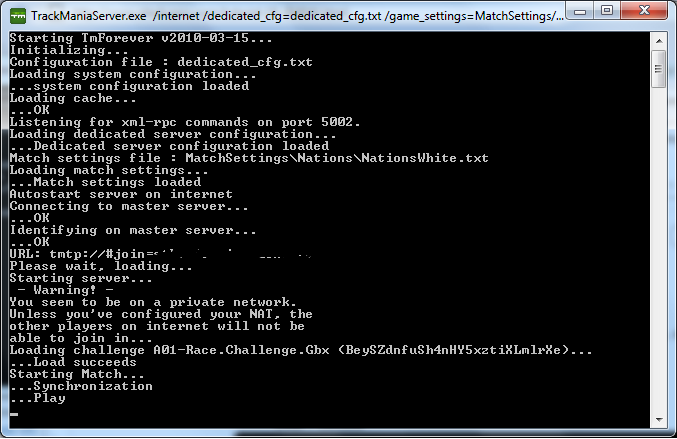

Pour TrackMania Nations Forever, il vous faudra créer un deuxième compte, rentrez le login et le password dans <login></login> et <password></password>.
Pour TrackMania United Forever, il est possible de créer un compte spécial dédié. Utilisez cette page, et rentrez vos identifiants TMUF.
<server_options>
<name>nomDuServeur</name>
<comment>Commentaire (optionnel)</comment>
<hide_server>0</hide_server>
<max_players>Nombre maximal de joueurs</max_players>
<password>Mot de passe (optionnel)</password>
<max_spectators>Nombre maximal de spectateurs</max_spectators>
<password_spectator>mot de passe spectateurs (optionnel)</password_spectator>
Ici, entrez un nom, pourquoi pas un commentaire, le nombre maximal de joueurs, un mot de passe si vous le souhaitez, le nombre maximal de spectateurs et aussi un mot de passe spectateurs si vous le souhaitez.
Ce sont les ports qu'utiliseront le serveur. Je vous suggère de mettre 2351 et 3451, étant donné que le jeu utilisera les ports 2350 et 3450, il vaut mieux en choisir des autres par précaution.
Il y à aussi le port xmlrpc, qui servira à communiquer avec le script basic.php pour contrôler votre serveur une fois en ligne (nous verrons ceci après.) Je vous suggère de modifier la ligne <xmlrpc_port>5000</xmlrpc_port> et d'y mettre le port 5002.
Enfin, pour la ligne <packmask>stadium</packmask>, laissez "stadium" si vous faites un serveur Nations Forever, et laissez vide si vous faites un serveur United Forever.
Voilà, c'est suffisant !
Lancement du serveur
Nous allons faire un script batch.
Un squripte quoi ?
Un fichier batch est un fichier de commandes Windows. Ils nous permettra en quelques sortes d'envoyer des "ordres" au serveur une fois ce fichier démarré. Ce qu'on veut faire ici, c'est le lancer ...
Créez un fichier texte dans le dossier de votre serveur, et pas ailleurs ! Pour ce faire, il vous suffit de faire un clic droit dans le vide une fois dans le dossier, "Nouveau", et "Document Texte". Vous nommerez le fichier texte "lancement.txt"
Ensuite, faites "Enregistrez-sous...", allez dans le dossier de votre serveur, et enregistrez sous le nom de "lancement.bat". Supprimez ensuite le fichier .txt
Lancez votre fichier .bat. Si tout se passe bien, le serveur se lance avec les circuits Nadeo white !

Et si vous avez correctement configuré le fichier dedicated_cfg.txt, ouvert les ports 2351, 3451 et 5002 dans vos pare-feus et routeurs, le serveur tourne et est prêt à être rejoint !
Mais ce serait dommage de s'arrêter là. Notre serveur tourne, est joignable depuis l'extérieur, maintenant nous allons voir comment le gérer en temps réel.
Nous allons pouvoir voir comment gérer le serveur en temps réel grâce au script basic.php :)
Le script basic.php se trouve dans : RemoteControlExamples\PhpRemote
Ouvrez le avec un éditeur de texte, tel que Bloc Notes où encore Notepad++.
En effet, rendez vous à la ligne 153. Vous y verrez la ligne <?php ParseArgument( $port, 'port', 5000 ); ?>, nous allons modifier le port 5000 en 5002, car c'est celui la qu'utilise notre serveur. C'est en effet avec ce port que le script basic.php communiquera avec le serveur. ;)
Une fois ceci fait, nous allons voir comment utiliser ce fichier. Si vous avez WAMP, où encore EasyPHP, vous n'aurez qu'à déposer le fichier basic.php et le fichier GbxRemote.inc.php dans votre dossier www pour pouvoir y accéder via localhost.
Si vous n'avez pas WAMP où EasyPHP, je vous suggère d'installer un de ces deux packs Windows Apache, Mysql et PHP (ce qui est le plus intéressant dans notre cas est PHP et Apache. ;)
Je ne reviendrais pas sur l'installation de WAMP plus que ça. Une fois WAMP installé et lancé, déposez les deux fichiers dans C:\wamp\www, et vous pourrez y accéder via http://localhost/basic.php
Pour plus d'informations détaillées à propos de WAMP et de son installation, je vous conseille d'aller faire un tour sur la chapitre "Préparer son ordinateur" du tutoriel PHP de M@teo21
Au final, rendez vous sur la page basic.php. Si votre serveur est lancé, vous devriez voir une page qui va vous permettre de gérer en direct votre serveur.
Gérer son serveur
Sous "Server Status", vous avez le Status de votre serveur. Il devrait être en "Running - Play "
Principaux boutons.
Quelques explications sur les 5 boutons en dessous.
RestartChallenge sert à redémarrer la map
NextChallenge sert à passer à la prochaine map
StopServer sert à stopper le serveur
QuitGame sert à quitter le serveur
CleanBanList sert à vider la liste des bannis
Voilà ! Ce sont les boutons dont vous vous servirez le plus souvent.
ServerOptions
Dans ServerOptions, vous pourrez modifier à peu prêt tout ce qu'on à déjà configuré dans dedicated_cfg.txt. Par exemple le nom du serveur, commentaire, password, ...
N'oubliez pas de valider en faisant SetServerOptions après avoir terminé.
Game Infos
Dans Game Infos, vous pourrez par exemple changer le mode du jeu, passer de Rounds à Time Attack par exemple !
Challenges
Pour finir, nous avons Challenges. C'est tout simplement les maps du serveur. Pour ajouter une map, déplacer le fichier Gbx dans GameData\Tracks\Campaigns, et ajoutez la map en tappant Campaigns\NomDeLaMap.Gbx.
Le bouton RemoveChallenge servira à supprimer une map, et le bouton NextChallenge à faire d'une map la prochaine map. Et enfin en dessous, vous pouvez charger une nouvelle playlist :)
Nous avons fait le tour de basic.php, a vous de jouer !
Ca va allez vite, l'utilisation de FAST est vraiment très simple !
Pour commencer, votre serveur doit être démarré. Rendez vous ensuite dans le dossier GameData/Config de FAST et copiez-y le fichier dedicated_cfg.txt du serveur dédié. Ensuite, ouvrez FAST3 start.bat avec un éditeur de texte, cherchez la ligne "php5\php5.exe" fast.php dedicated.cfg update_stop10
Editez dedicated.cfg en dedicated_cfg.txt. Enregistrez et lancez le fichier .bat...
C'est tout, trop facile :D
Vous disposez à présent d'un bon gestionnaire de records pour votre serveur ! Vos records seront enregistrés sur Dedimania.net
Vous serez admin normalement à votre première connexion au serveur.
Pour les commandes, tapez /help dans le chat pour avoir la liste ;)
Exemple : /adm restart redémarrera la map, /adm next passera à la prochaine map, /admin add PseudoIci ajoutera un admin.
C'est à peu prêt tout ce que j'ai à dire sur FAST. Très simple d'utilisation et facile à installer.
Voilà ! Vous avez appris comment faire un serveur sous Windows.
Une des choses sur laquelle je voudrais revenir serait l'ouverture des ports. C'est la cause de la plupart des problèmes que j'ai eu auparavant. Pensez bien à ouvrir les ports 2350, 3450 et 5002 dans vos routeurs / pare-feus ;)